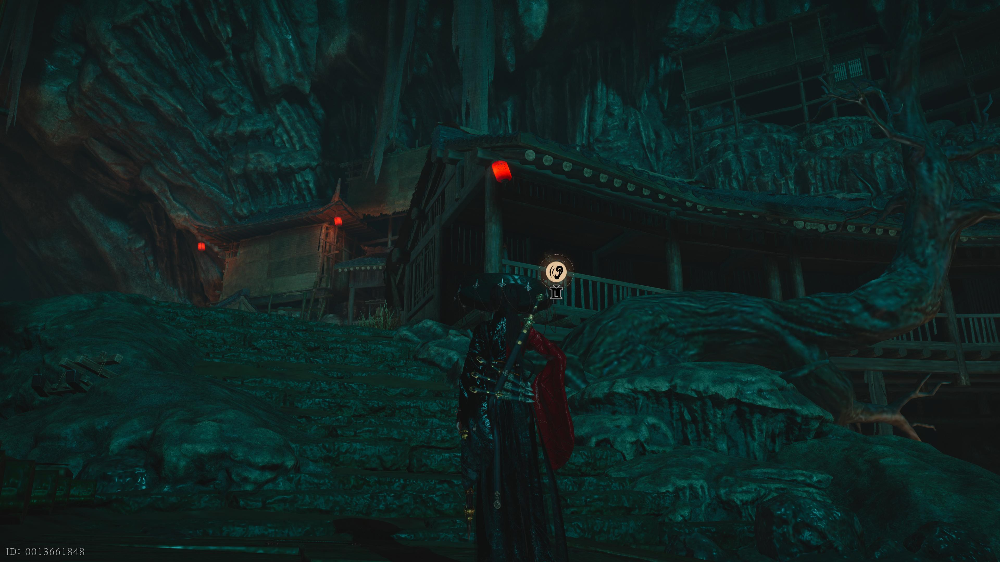
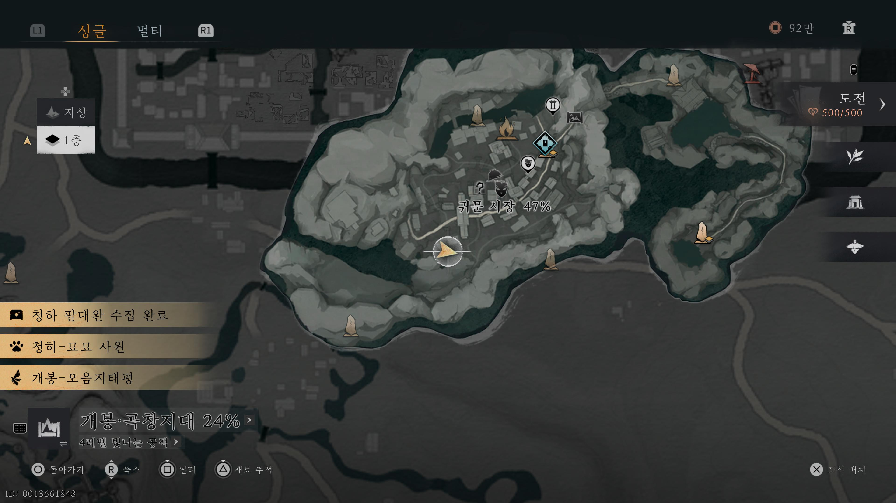
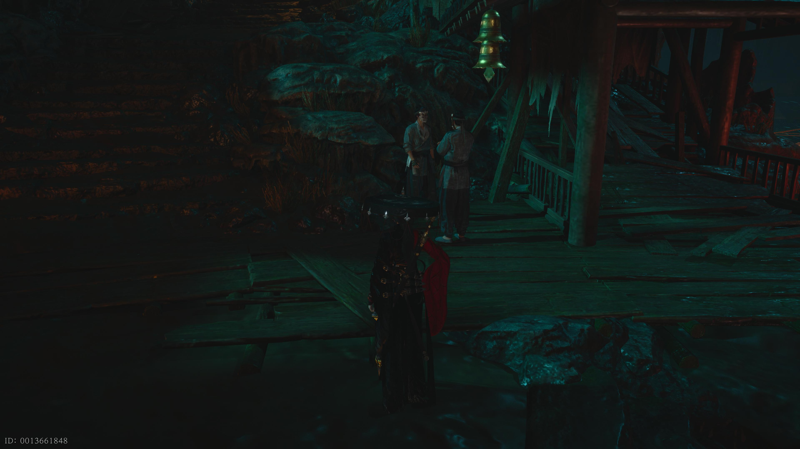

인연의 궤적
암류 6장
현재 완료 불가 (일부 미개방)
📜 수집 개요
'인연의 암류' 6장의 수집 항목입니다.
일부 항목은 추후 업데이트를 통해 획득 가능합니다.
1. 당전 징수
획득 방법: 개봉 지역 메인 퀘스트 완료 시 자동으로 획득됩니다.
2. 귀문 시장 식량 통로
획득 방법: 귀문 시장의 아래 위치에서 '엿듣기'를 진행하세요.


💡 완료가 되지 않는다면?
아래 장소로 이동하여 두 사람의 대화(자막)를 끝까지 들어주세요.


🔒 3. 알 수 없음
획득 조건
개봉 협적 '종권'을 마무리해야 획득 가능한 것으로 알려져 있습니다.
(현재 획득 불가)
(현재 획득 불가)